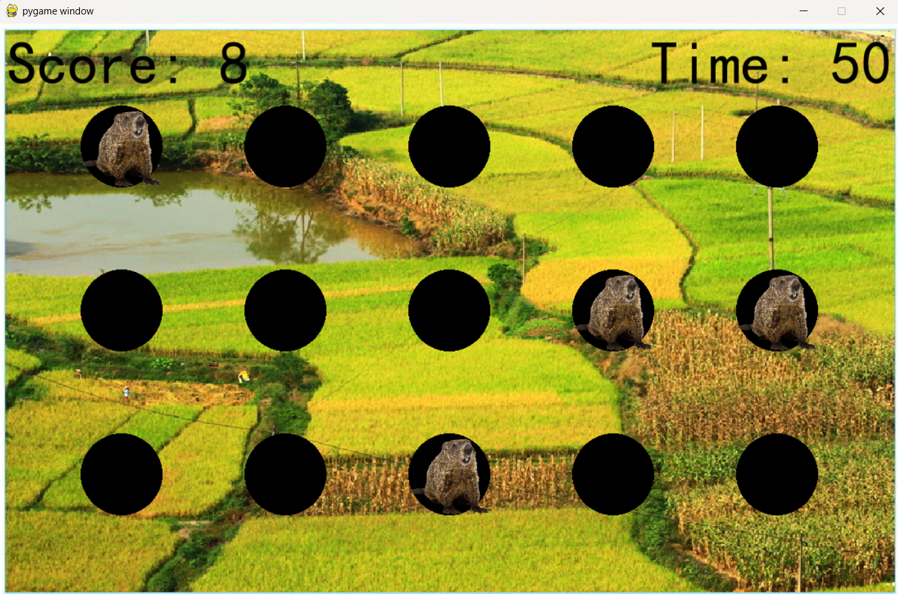
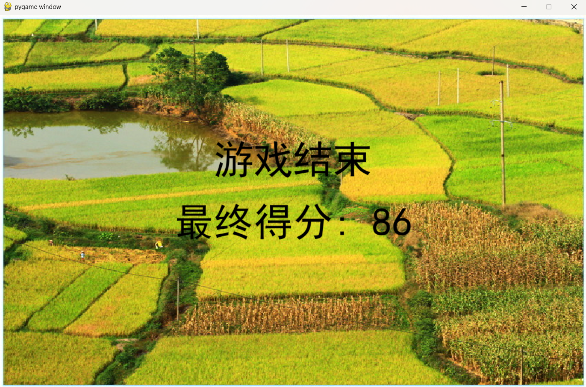

你好！我是张世傲，一名热爱编程和设计的初级独立开发者。我来自浙江杭州，今年25岁，在大学里主要学习计算机科学
当我十岁的时候，我的父亲把我们家的第一台电脑带回家。看着他解决复杂的问题，把原始的想法转化为有效的解决方案，给我留下了深刻的印象。那些早期的着迷时刻激发了我对技术的好奇心，并激励我探索编程如何塑造世界和改善日常生活。
基于这个灵感，在大学中我选择了计算机科学，以便于接触更尖端的技术；从大学毕业后，我决定成为一名开发者方便我学到更多的技术
2018.08 —— 2023.05 | 美国西敏斯特学院(犹他州)(Westminster College) | 计算机科学 | 本科
所学课程：计算机操作系统，计算机安全，计算机算法，计算机网络，数据库，软件工程，人工智能等
学校简介：西敏斯特学院（Westminster College）建于 1875 年，是美国犹他州唯一的一所由国家认的综合型私立文理学院。其连续 12 年被“美国新闻与世界报道”称为顶级高校，也是西部最好的大学。著名专业包括计算机技术、商学、教育学等。
这是我的毕业证书。
这是我的学历认证书。
- 熟练使用英语进行会话，阅读和写作，可无障碍阅读英语文档
- 编程语言: Java, C, Python, C#
- 操作系统: Linux
- 数据库: MySQL
这里展示了我制作的一些项目。所有在此展示的项目都可以下载
一个使用python开发的简易打地鼠游戏，在游戏中，有60秒钟的时间限制，玩家需要通过不断的击打地鼠以获得更高的分数。每得到10分，计时系统会短暂的暂停以降低难度，当时间耗尽，游戏结束，将显示玩家的得分。
相关截图：
 点击此处下载我的项目。
你可以通过以下方式联系我：